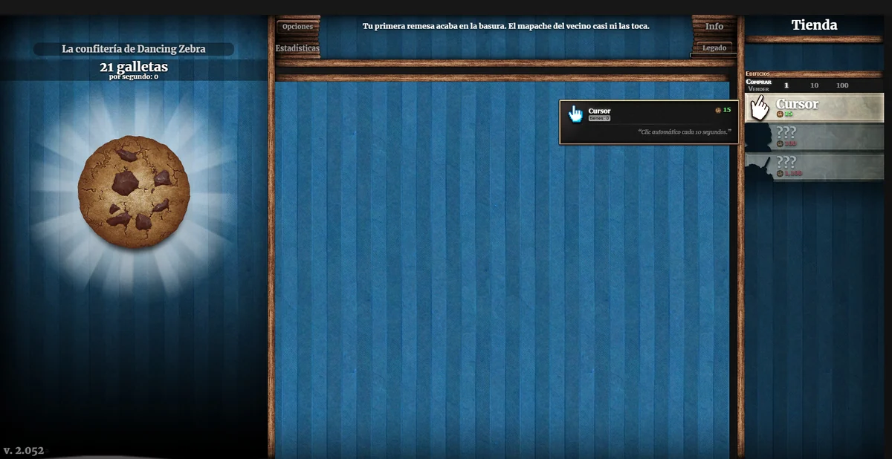

Cookie Clicker y el valor de un clic
Una sola acción basta para poner en marcha un sistema de producción que cambia las decisiones del jugador.

Cookie Clicker empieza con una galleta grande y un contador. Cada clic suma una galleta. Al reunir las suficientes, se pueden comprar cursores, abuelas y otros productores que trabajan de forma automática. El salto entre esas dos maneras de producir sostiene el juego y permite entender qué distingue a un juego incremental.
Comprar producción cambia el objetivo
La primera compra tiene un efecto visible. El contador ya puede crecer sin la intervención constante del jugador. A partir de ahí, interesa tanto la cantidad disponible como la velocidad a la que aumenta. La cifra de galletas por segundo da una medida del rendimiento de las compras y permite comparar opciones.
Cada compra utiliza galletas que podrían guardarse para una mejora más cara. Gastar ahora acelera la producción a corto plazo. Esperar permite adquirir algo distinto. La elección aparece de forma natural cuando el precio de los productores sube y empieza a importar cuánto tardará en recuperarse lo invertido.

La interfaz hace visible el progreso
El juego muestra el saldo y la producción por segundo mientras la tienda indica cuánto falta para la siguiente compra. Así se puede observar lo que cambia tras una decisión. Si la producción mejora, el jugador ve cómo baja el tiempo necesario para alcanzar una cifra que antes parecía lejana.
La acción de pulsar sigue teniendo un papel durante la partida, pero comparte protagonismo con la gestión del tiempo y los recursos. Esa transformación nace de una regla fácil de comprobar. Las galletas producidas hoy permiten elaborar más galletas mañana.